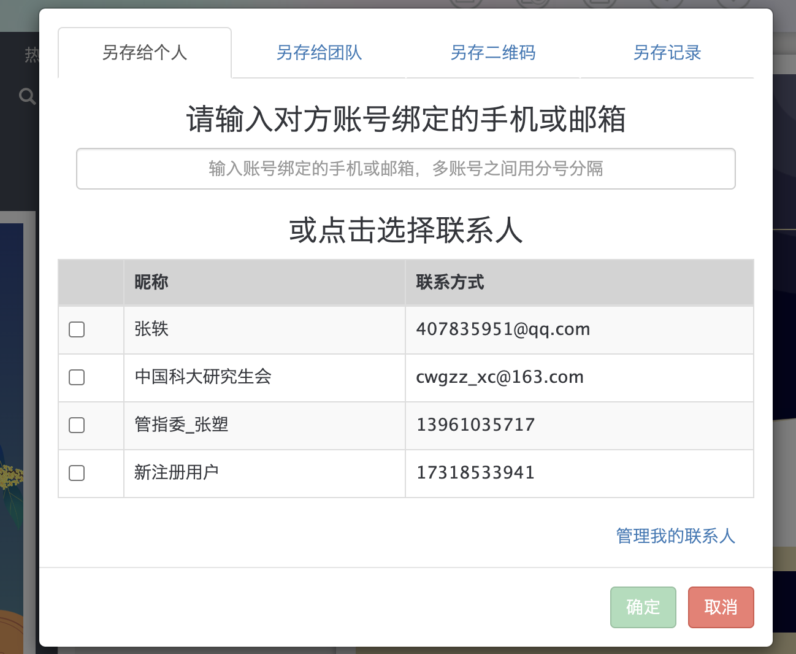

秀米上其他与微信推送有关的功能介绍¶
这篇文章讲解的内容适用于刚刚完成上一篇文章作业的你。在秀米上排好了一篇图文之后，下一步应该做什么？
预览¶
由于电脑的浏览器宽度和手机的浏览器宽度差别很大，而用户通常会使用手机来阅读图文消息，因此我们需要在手机上预览我们排好的图文消息。
进入要预览的图文，点击上方的「预览」按钮就会弹出预览界面。包括一个二维码和右侧的文章预览窗口。
- 右侧的文章预览窗口在一定程度上模拟了手机浏览器的宽度，可以初步看一下有没有不合适的地方（一些常见的不合适的情况会在后续的文章中讲解）
- 左侧的二维码可以截图分享给其他人，如直接截图发到宣传部小群里让大家看看有没有什么问题
- 这个二维码是有有效期的，如果间隔时间太长需要重新生成
- 如果你在把二维码发给别人审阅之后，又修改了图文内容，则只需要提醒对方刷新预览的网页（即二维码扫出来的网页）即可，不需要重新截图二维码发给对方
同步¶
秀米是一个排版网站，而微信推送需要从微信公众平台（https://mp.weixin.qq.com/）上发出，所以我们需要一种方式，将我们在秀米上排好的图文转存到微信公众号平台上。最常用的方法是秀米的「同步」功能。
- 在秀米中进入要同步到微信的图文
- 最上方选择「导出」-「同步到公众号」
- 等待进度条拉满
- 在微信公众号平台的「草稿箱」处即可找到这篇图文
注意：如何在秀米上绑定要同步的公众号，这里不教。原因如下：
- 如果你是使用学生组织的公号登录的秀米，那么你的前辈肯定已经在秀米上绑定好了要同步到的公众号
- 如果你是使用私人的秀米账号，一般也不允许将私人账号与学校的公众号进行绑定
接下来如何从保存到微信公众平台的草稿箱中的推送到发出，不是这篇文章的讨论范围。如果你迫切地想知道，你可以立即查阅之后的文章。
转存（选择性阅读）¶
我们常常在微信、QQ上与别人发送消息，「图文」是否也能成为一种消息，在秀米账号之间进行传送呢？（如，你可以在私人的秀米账号排版完成之后转存给学生组织的秀米公号）「转存」功能可以做到这一点。
- 在秀米中进入要同步到微信的图文
- 最上方选择「更多」-「另存图文给其他用户」
- 在弹出来的对话框中输入或选择要发送至的用户
- 点击确认并发送完成后，对方可以在他的「我的图文」里找到你发送的图文


或者：在「我的图文」页面，找到要分享的图文，下方四个按钮中的分享按钮可以达到和上面一样的效果。
团队（选择性阅读）¶
「团队」功能主要是可以将多个人的账号统一成一个组织，在这个组织内部的账号可以互相看到、互相修改他人的推送。校学生会宣传部不采用这种方法，而是让干事们共享公号的账密。原因如下：
- 干事们通常不会使用私人账号进行排版工作
- 一个干事登录公号，不会导致其他干事的登录状态下线
- ~~团队版会员比较贵~~
所以，不打算讲秀米上有关团队的功能。
作业¶
无
（撰写：黄瑞轩）